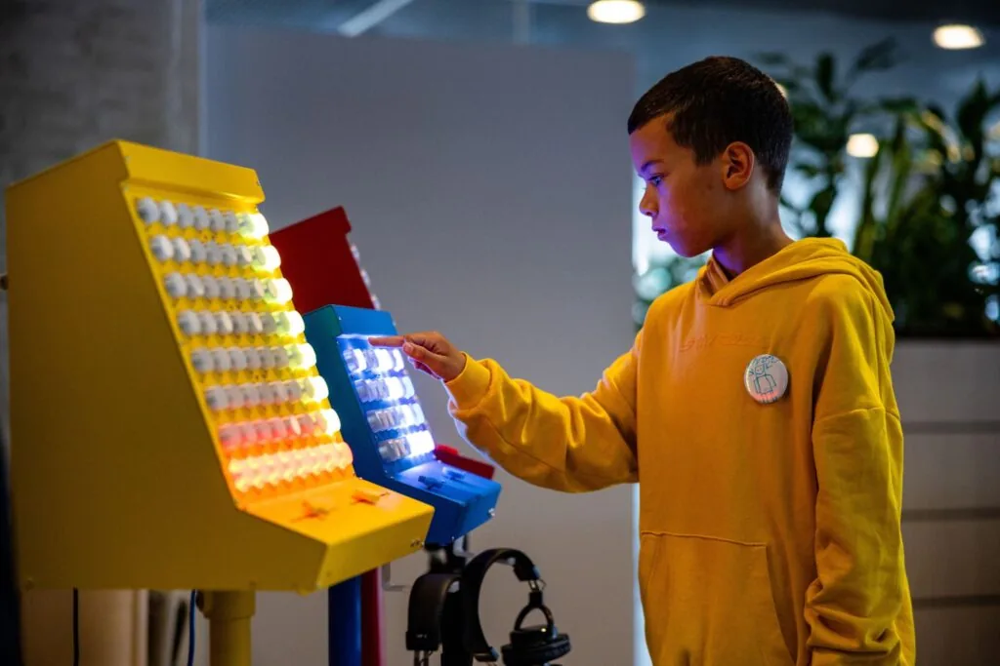

2025 terugblik
In 2025 werkten we samen met Joost Klein, bouwden we installaties voor musea die nog niemand heeft gezien, en toch was het mooiste moment een kind dat per ongeluk iets ontdekte.

2025 was een jaar waarin we op talloze plekken mochten werken met uiteenlopende doelgroepen, van leerlingen die voor het eerst met technologie spelen tot artiesten die al jarenlang op het podium staan. Ook brachten we bezoek aan het buitenland om onze ervaring en visie te delen. Wat al die momenten verbond, was interactie. Het zoeken naar die ervaring waarin iets openbreekt, waarin iemand onverwacht iets ontdekt of samenkomt met een ander.
We mochten bij veel evenementen aanwezig zijn: Maker Days, het Cpunt Mediafestival en workshops bij cultuurhuizen. Steeds weer zagen we hoe een installatie pas écht tot leven komt wanneer iemand er zijn eigen draai aan geeft. De interactie is nooit een trucje dat we vooraf bepalen. Het ontstaat in het moment, tussen mensen onderling, en wij faciliteren slechts de aanleiding.
Daarnaast kregen we de kans om grotere opdrachten aan te nemen. Interactieve installaties voor verschillende musea waar we in stilte aan gewerkt hebben, die volgend jaar naar buiten komen. Deze stap, van losse momenten naar grotere, diepere trajecten, voelt als een natuurlijke groei van ons bedrijf.
In de tussentijd is ons werk al te bezichtigen bij het Home Computer Museum in Helmond.
Een ander hoogtepunt was de samenwerking met artiesten, zowel gevestigde namen als makers die net komen kijken: Joost Klein, Tantu Beats, Ramses3000 en Aura. Die gesprekken, schetsen en experimenten verruimen onze blik. Muziek, performance, beeld en interactieve technologie: de grenzen vervagen steeds meer, en precies daar voelen we ons thuis.
Dank aan alle partners, genoemd of niet genoemd, voor het vertrouwen in 2025. We hopen jullie in 2026 terug te zien.